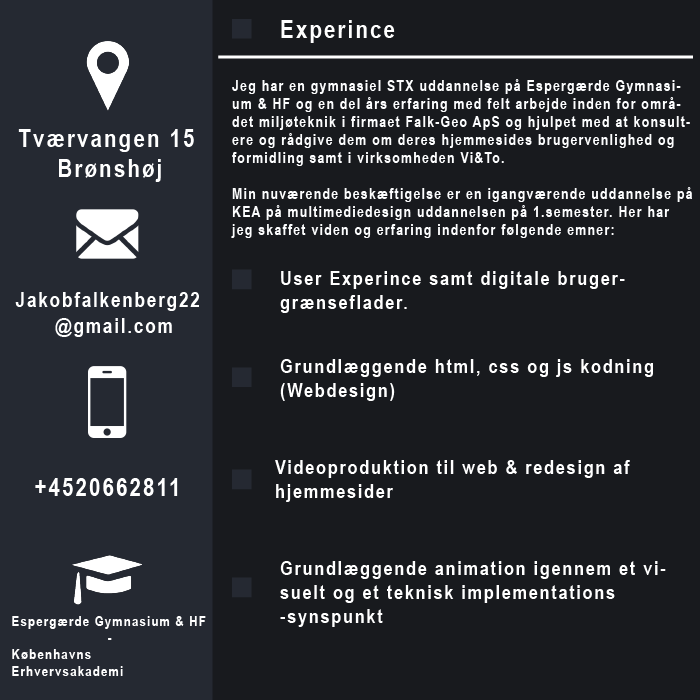
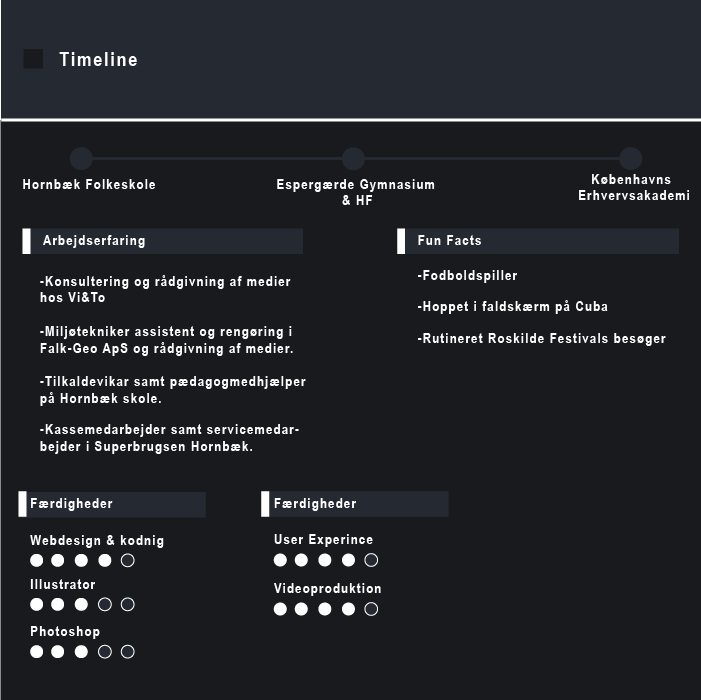

Curriculum vitae - CV
Jeg er en ung fyr på 23 år, der til dagligt bor i Brønshøj med tre utrolig søde venner. Jeg spiller til dagligt fodbold i min barndomsklub og tilbringer det meste af tiden med en bold. Jeg studerer multimediedesign på Københavns erhvervsakademi på 1.semester.
Jeg har altid haft stor interesse for at kunne designe et bæredygtigt produkt eller en samfundsorienteret
ide, der kan forbedre de fremtidige generationer ved hjælp af f.eks. en digital platform. På min gymnasiale
uddannelse på Espergærde Gymnasie var jeg meget engageret i mediefag og informationsteknologi, da jeg
følte mig hjemme i fagene.

